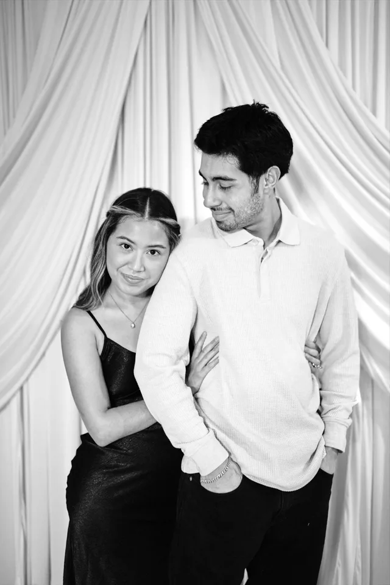
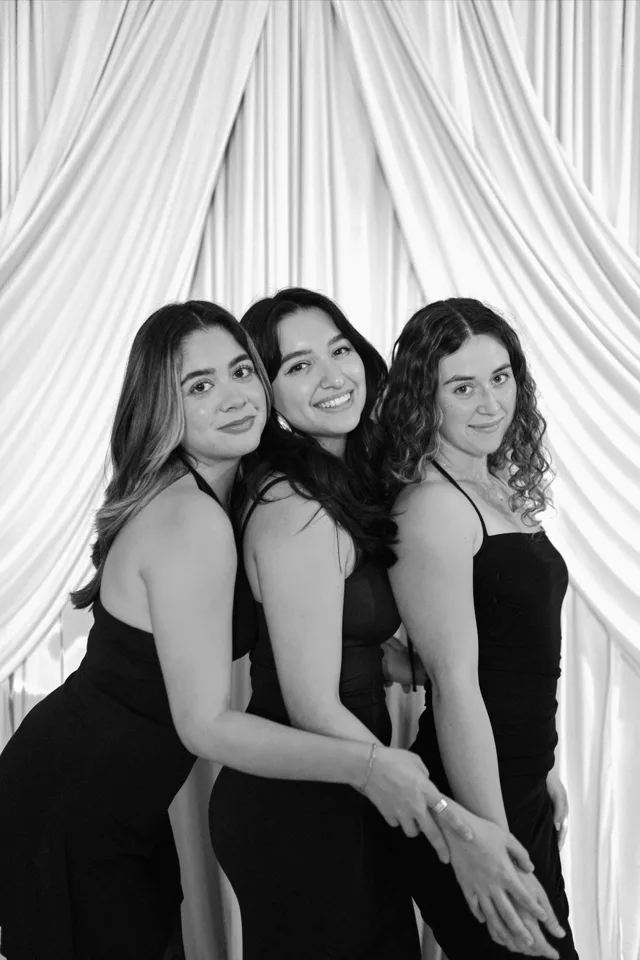
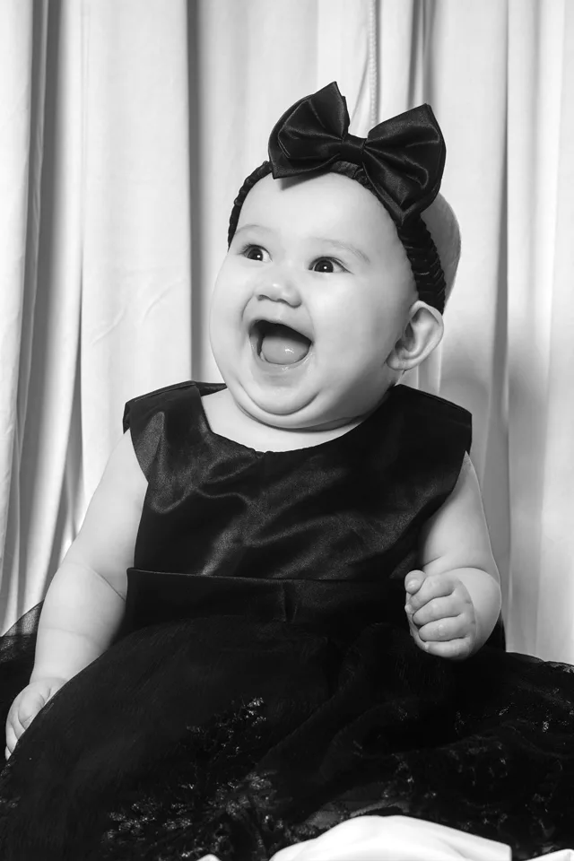
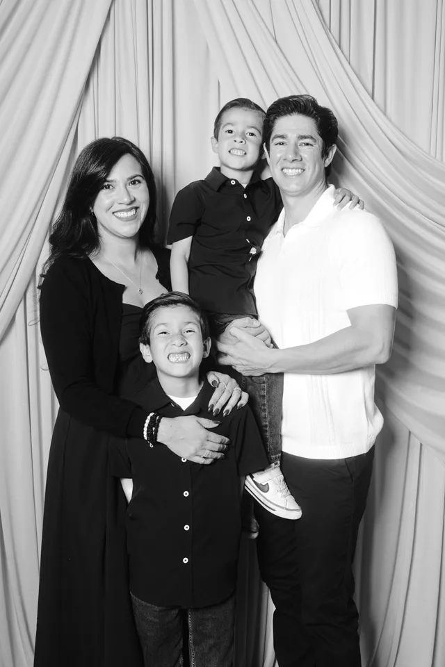
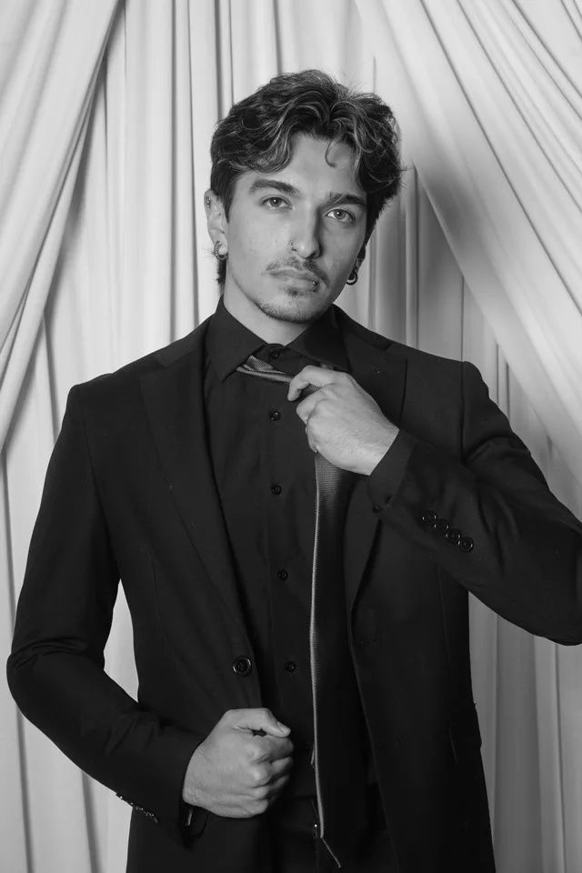
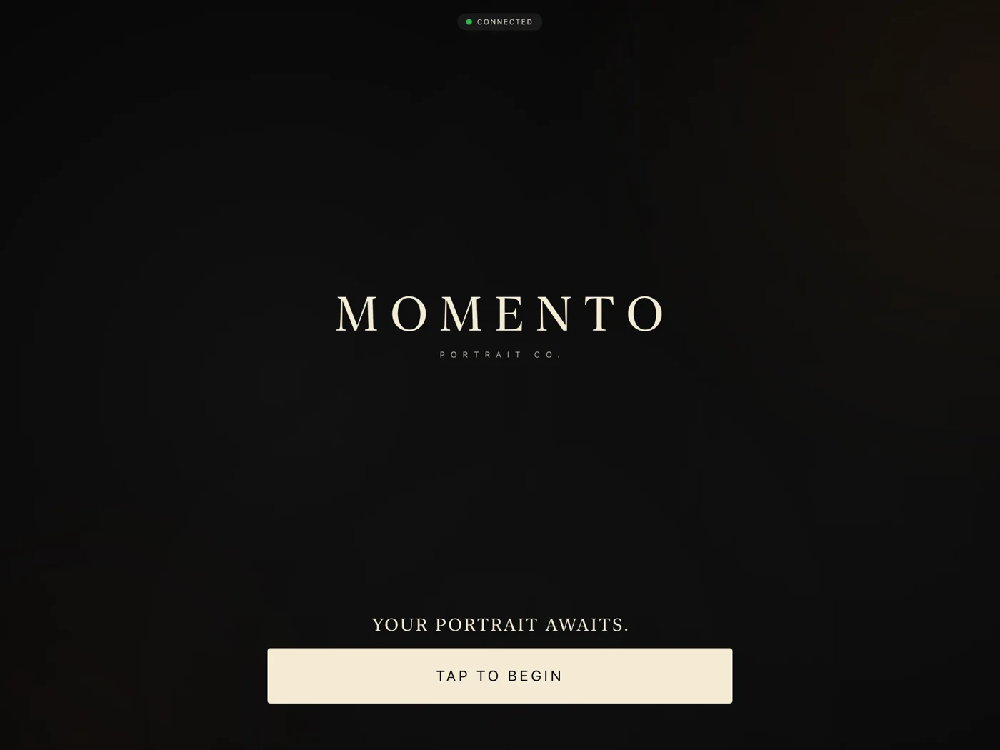
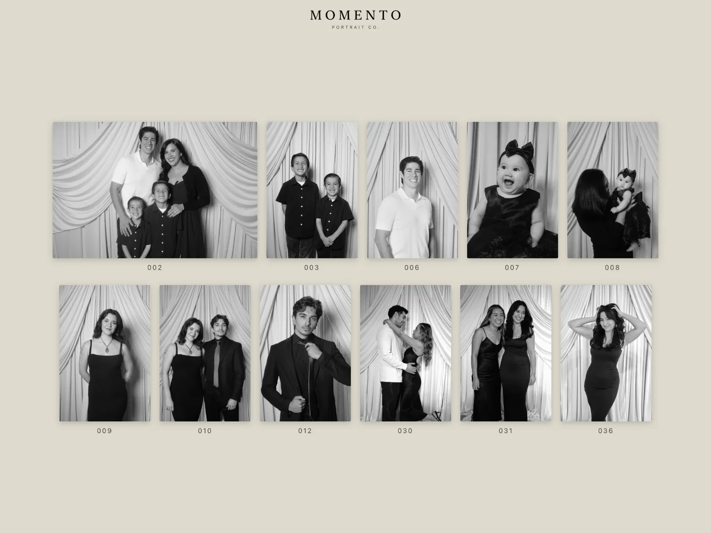
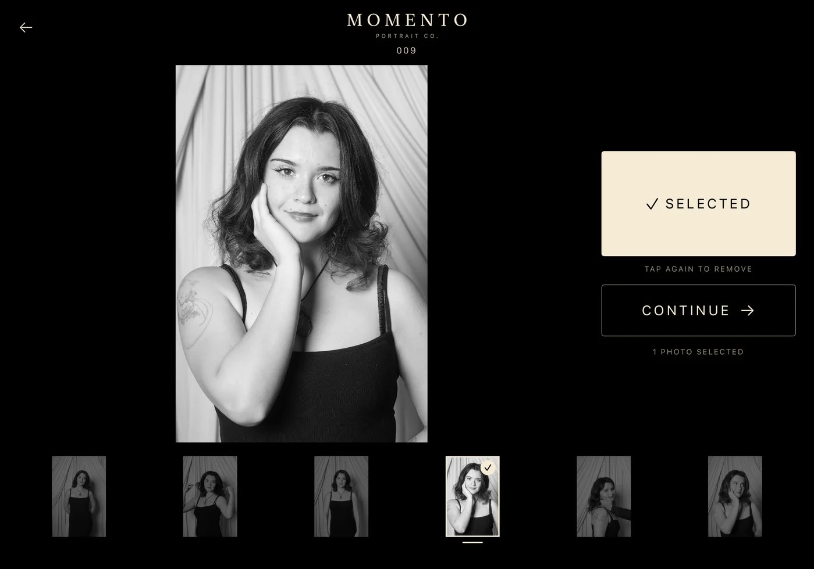
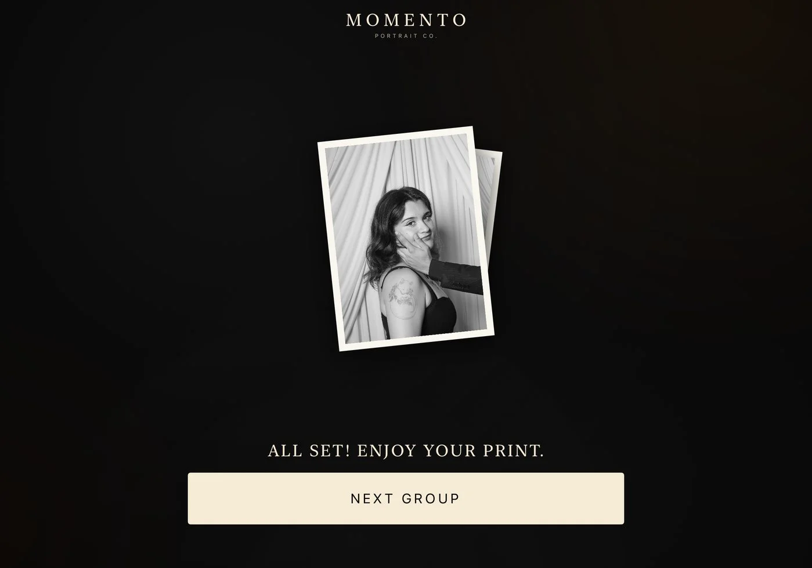
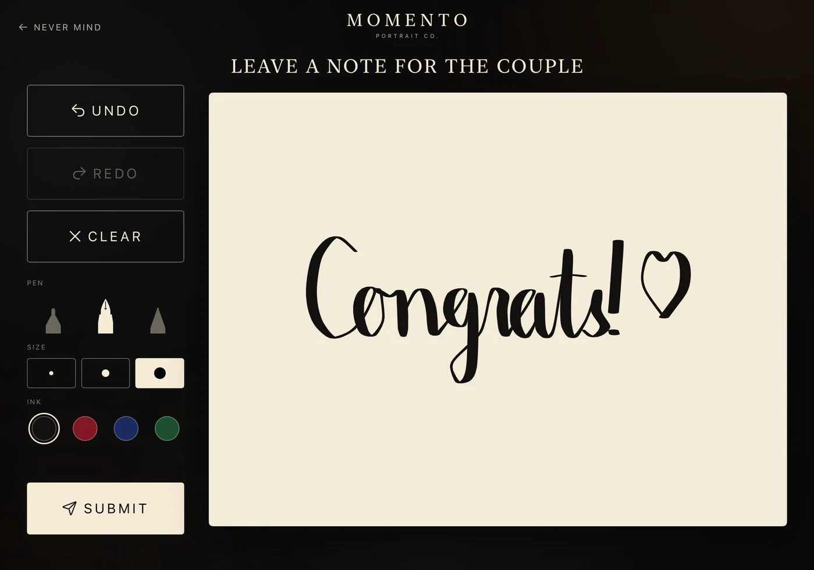

01 — The idea
Guests deserve better than a photo booth.
Darrian and I have been friends since sixth grade, and we’ve always shared two things: a love of photography and a love of technology. At weddings and events we kept seeing clunky setups and forgettable photos, so we started Momento: a real portrait station with a professional photographer, studio backdrop and lighting, and prints guests take home that night.
We shoot in black and white because it’s timeless and never clashes with the room. Off-the-shelf booth software didn’t fit how we wanted the night to run, so I designed and built our own.
02 — How it works
From backdrop to print in minutes
Step in
Our photographer takes a short series of portraits in front of the studio backdrop.
Choose
Moments later the photos appear on our iPad. Guests flip through and pick their favorites.
Take it home
The portrait prints on the spot: a 4×6 with our signature vintage white border.
Leave a note
As an add-on, guests write a message by hand that’s placed beside their portrait in the guest book.
No Wi-Fi, no apps for guests to download, and no waiting for a gallery link. Just a portrait in hand, the same night.
The full studio, brought to you
The portrait station
Included with every booking
- Professional photographer and assistant
- Backdrop and lighting
- iPad for guests to choose their portrait
- Unlimited 4×6 prints during the booked hours
- Setup and pack-down
- Digital copies of the portraits after the event
Add-ons
For couples who want a keepsake
- The guest book: a printed page per guest with their portrait and handwritten note
- Extra hours
03 — The portraits
Timeless by design
Every portrait is shot in black and white against our draped backdrop, so couples, friends, families and the littlest guests all share one look that never clashes with the room.





04 — The system
Two apps, one direct connection
Momento runs on two SwiftUI apps that share one connection layer: an operator app on the Mac for us, and a guest app on the iPad. The iPad finds the Mac and connects to it directly, peer to peer, so the station works at any venue with no router or internet.

- Mac operator app
- Watches the Capture One export folder and groups each guest’s photos automatically by export time, then manages the print queue, the live gallery and settings
- iPad guest app
- Shows waiting groups as a gallery; guests tap theirs, swipe through, select a photo and confirm
- Direct connection
- Peer-to-peer over the Wi-Fi radio, reconnecting on its own if the link drops, with no network needed
- Printing
- The Mac prints the original straight from the export folder to a dye-sublimation printer as a bordered 4×6




05 — Designing for the event floor
Built for a busy reception, not a demo
Most of the design work went into what happens when things are hectic: a line of guests, two of us running the station, and no time to troubleshoot.
- No send button
- The assistant just exports a guest’s selects from Capture One. Momento notices the batch and puts it on the iPad, so there’s no extra step between shooting and choosing
- Guests never see errors
- Printer problems show only on the Mac, with a retry, while the iPad keeps the guest’s experience calm
- Sensible defaults
- On the guest-book screen, a tap prints two copies and waiting prints one, and screens time out back to the welcome screen on their own
- Nothing gets lost
- The queue survives a restart, photos are only ever read and never moved or deleted, and an unplugged drive is picked back up when it returns
06 — The guest book
A handwritten page for every guest
The guest book add-on asks each guest if they’d like to join. If they do, a large card opens on the iPad where they write or sign with Apple Pencil. The Mac then builds a print-ready guest-book page with their portrait and note side by side, alternating left and right pages in the order guests sign.

07 — The website
The studio’s front door
I also designed and built momentoportrait.co. It’s a simple, fast site whose colors match the app, so the brand feels the same from the first visit to the print in a guest’s hand.